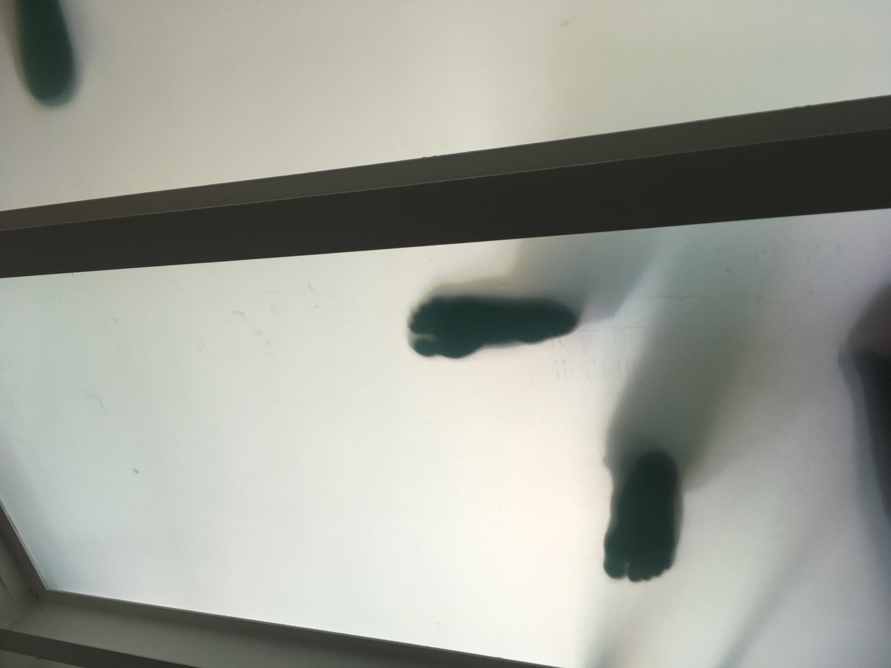
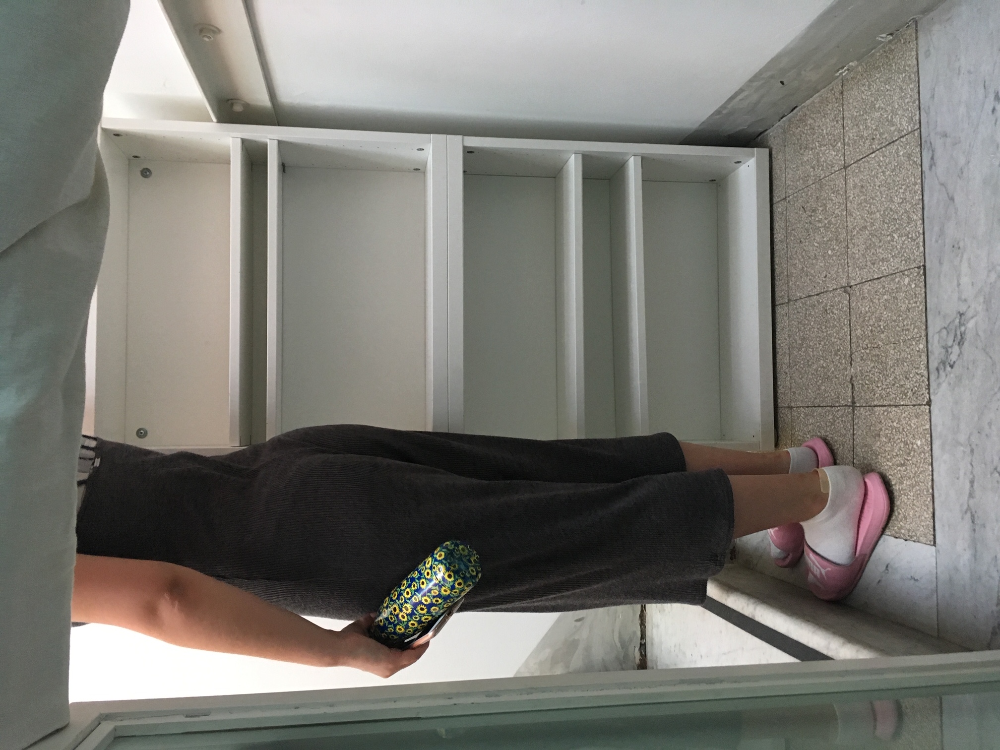
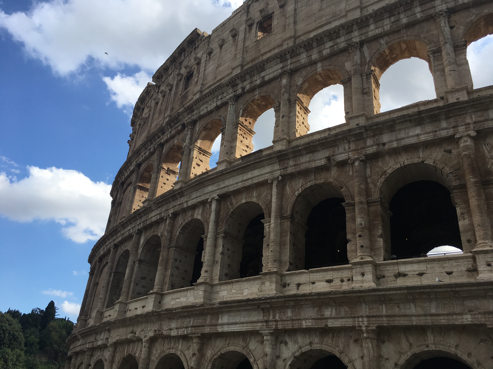
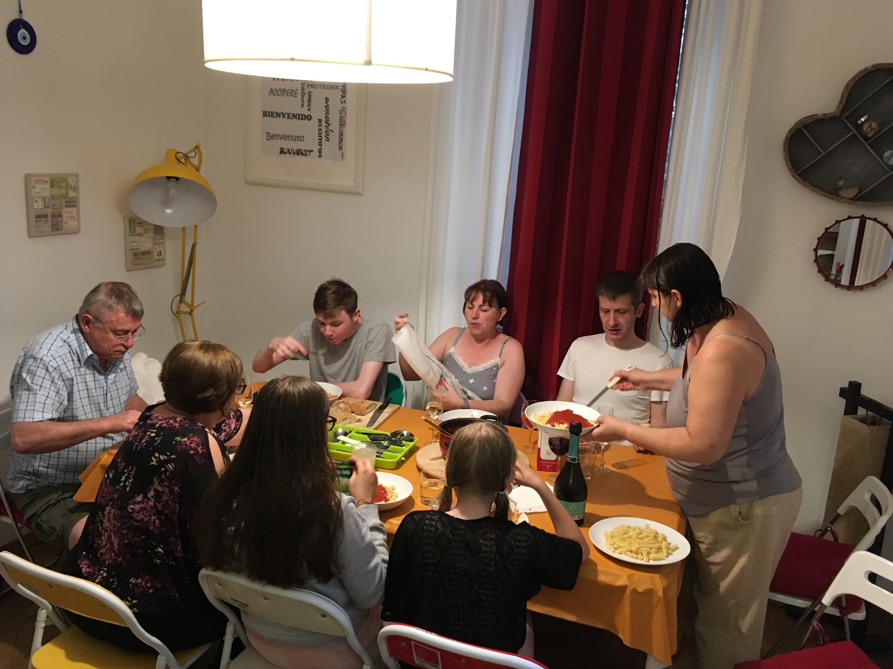

We were up at three on Saturday for our trip to Rome. Nanny and Papy are taking their children and grandchildren on holiday , because they will soon be to old to insure.
When we got to N&P’s they had been up since 2. “YOU CAN”T MOVE AROUND WHEN YOUR OUR AGE!”. We should get Nanny a T shirt with that written on it.
Amazingly, we beat the Ellises to the airport, but only just, so they caught us up before check in.
I hate airports. It actually went quite smoothly, so we ended up in a heaving food court with time to spend three pounds on a bendy pain au chocolat. C&A are hardened flyers so with a “Bye, we’re off to Pret!” they scarpered, to get something much better and cheaper.
The best thing about the plane is that the seats don’t recline. Genius. I nabbed the window seat, only to find that it didn’t have a window, to stop the engine blades piercing the perspex. I had to lean against the lady in front's seat to see out of her window. But she couldn’t recline, so I could see!
I saw Birmingham, Rouen, today’s Tour start town, the Matterhorn, then some uncertain islands in the Mediterranean when my preloaded maps ran out. One turned out to be Elba, which looked like a pretty good place to get exiled to to me.
At the airport, we had to change baggage reclaims twice, once between bags, only for the missing one to turn up on the one the last two had come off. Papy complained loudly about Italians and organisation.
It took so long our chauffeur had to text to see what had gone wrong.
The chauffeur had brought his friend and his van, who took the rest of us when C&N&P went in the E class.
Maurizio met us at ‘his’ house. I think it might be someone else’s and he just sorts out running it. I like it, but the Air BnB page is a work of photographic genius, because it’s half the size it is on the pictures.
We were quite early so while the cleaners cleaned we headed out for lunch, a restaurant just round the corner.

Mine was very nice, Nanny and Papy’s looked adequate, at best, but perhaps they chose poorly. The pizzas looked good.
We all went to the supermarket on the way back and got tea and booze.
“Did you only buy drink, not food?” Asked Nanny, on our return, having been there with us during the buying process.
We did buy lemon ice lollies with liquorice sticks that everyone left behind, but forgot some cocktail ingredients so had to nip back.
N & P have taken the room I had down for Chesk and Freya. The girls wanted the one I had Jake down for, but he wasn’t giving it up. It’s through a limbo door at the top of the stairs and his floor is the inside of the skylight. It leads straight on to the rooftop terrace and he also has a kitchen.
 The rest of us are in the middle floor.
We unpacked a bit and sat on the roof, where we decided it was too hot and headed out without N&P because Papy was asleeep.
On the way to the Colloseum I saw two nuns. Now, this is more than you would see in 20 years at home, so I decided to keep count. While I was taking note of the tally, a monk walked past that I missed, but C spotted him.
I slightly misunderstood Ryan’s instuctions, so we went to the colloseum to get tickets for tomorrow. We got there at 6, but the lady wouldn’t sell us any because it was only open for another hour. So, we went to look at the Arco De Constantino and it started to spit.
Then proper rain and there were screams from the other side of the colloseum. Shandy dinking foreigners, clearly. Then it reached us.
It did rain quite a lot. Some bits of the roads got knee deep as we hid under some trees.
It slowed slightly and we headed back.
Sensibly, I had taken off my trouser legs and put on my famous trouser shoes. In the rain, the they are entirely incompatible with the marble pavements of Rome. As I slid along like Bambi on ice, holding anything I could, I got left behind. C came back to rescue me while everyone else laughed and took pictures. At the metro station I headed down to look at the ticket machines, but turned back after I nearly slid off the top step.
Once everyone was dry we had tea in the house. With Chris & Alison’s fancy eating out ways I didn’t thing we’d eat in much. The kitchen looks a lot bigger with the shutters open and there are more dining table chairs than in the photos, so it all worked out.
During tea, Jake decided we have to be at the colosseum for 8:30. He’s been brought up well.
We went on the roof briefly, then everyone got too tired and we’ve gone to bed.